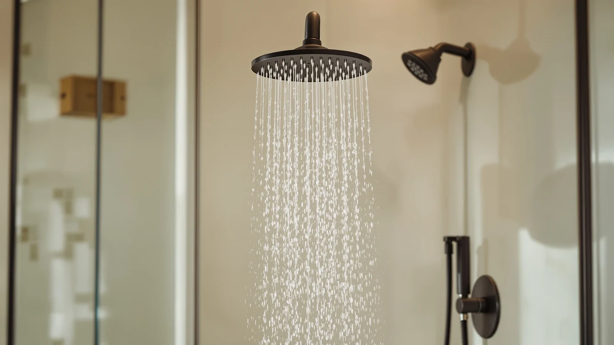

Delta Shower Heads vs Kohler: Which Is Better? (2026)
Prices and picks verified as of September 2026. Independent, reader-supported reviews.


Things to Know Before You Buy
- Delta relies on H2Okinetic spray technology, which shapes water into larger droplets for a stronger-feeling flow at standard flow rates.
- Kohler uses Katalyst, an air-induction nozzle that pulls air into the stream to boost droplet size and pressure sensation.
- Delta's entry-level fixed heads generally cost less than Kohler's, while both brands charge similarly steep prices for premium shower systems.
- Delta's 2-in-1 combo heads pair a fixed head with a handheld sprayer in one installation, a format Kohler sells less of.
- Both brands use soft-rubber nozzles, Touch-Clean on Delta and MasterClean on Kohler, that you wipe by hand to clear mineral buildup.
Delta shower heads vs Kohler is the matchup most people run into once they start replacing a shower head and notice both brands sit in the same aisle at similar prices. Delta built its reputation on H2Okinetic technology, which shapes the spray into larger, slower-moving droplets so a 1.75 gallon-per-minute head feels heavier than the number implies. Kohler takes a different route with Katalyst, an air-induction nozzle design that mixes air into the stream for a comparable pressure boost. Both brands sell handheld combos, rain heads, and traditional wall-mount fixed heads across a wide range of finishes and prices.
We compared the two lineups on build quality, price and value, and daily use rather than crowning a single overall winner, because the right pick depends on what's already in your bathroom. If your fixtures are already Delta or Kohler, matching the existing finish and valve trim usually matters more than the spray technology itself. If you're starting from scratch, the differences in nozzle cleaning, warranty coverage, and combo-head design below should settle it.
Quick Answer
Delta wins on affordability and handheld-combo variety, with models like the In2ition 2-in-1 giving you a fixed head and detachable sprayer for well under $100. Kohler wins on finish selection and premium shower systems for buyers outfitting a whole bathroom rather than swapping one fixture. Pick Delta for a straightforward, lower-cost replacement, and pick Kohler if you're matching a full suite of fixtures or want more finish choices like Vibrant French Gold or Oil-Rubbed Bronze.
What is Delta Shower Heads?
Delta Faucet Company has built shower heads and shower systems since the 1950s, and today the lineup spans budget fixed heads under $20 to premium shower systems that top $600, like the Modern 14 Series in our picks below. The brand's signature feature is H2Okinetic technology, which uses a sculpted face plate to break the spray into a wave-like pattern of larger droplets. Delta markets this as a way to feel more water pressure while the head still meets the federal 2.5 gallon-per-minute cap, or the stricter 1.75 gallon-per-minute limit required in states like California and New York.
Most current Delta shower heads also use Touch-Clean nozzles, soft rubber tips you can wipe with a finger to knock loose mineral scale, which matters most on hard well water. Delta's In2ition and HydroRain lines combine a fixed shower head with a magnetic or clip-mounted handheld sprayer, a configuration the brand has sold for over a decade and refined with MagnaTite docking on newer models so the handheld snaps back into place instead of hanging loose. Delta backs its residential shower heads with a limited lifetime warranty covering both function and finish, and most models install on a standard threaded shower arm without extra tools.
What is Kohler?
Kohler has manufactured plumbing fixtures since 1873, and its shower head catalog runs from simple wall-mount heads to Statement and WaterTile systems built around multiple body sprays and panels. Kohler's answer to H2Okinetic is Katalyst, an air-induction nozzle that draws air into the water stream through small vents, plumping up each droplet before it exits so a low-flow head feels less like a trickle. The company sells Katalyst nozzles across several collections, including Awaken, Forte, and Purist, each with its own head shape and spray-pattern count.
Kohler's MasterClean nozzles do the same job as Delta's Touch-Clean tips: flexible silicone nubs you wipe by hand to break up hard-water deposits without a brush or descaling solution. Kohler also offers a wider spread of finish names than most competitors, including Vibrant Brushed Nickel, Vibrant French Gold, and Anzio Bronze, which matters if you're matching cabinet hardware or a faucet you already own. Like Delta, Kohler backs its shower heads with a limited lifetime warranty, and most fixed heads thread directly onto an existing shower arm without needing a plumber.
Head-to-Head: Build Quality & Durability
On build quality, delta shower heads vs kohler comes down to nozzle material and finish coating rather than which brand uses sturdier metal, since both companies build their housings from ABS plastic or metal alloy depending on the price tier. Delta's Touch-Clean nozzles and Kohler's MasterClean nozzles use similar soft-rubber tips, and owners on hard water report both stiffening or wearing down after a few years regardless of brand. Metal-bodied models in both lineups, like Delta's chrome and brushed nickel fixed heads or Kohler's Purist collection, hold up better against corrosion than the all-plastic budget heads either brand sells under $30.
Finish durability depends more on the coating than the brand name. Delta's SpotShield finish resists water spots and fingerprints on stainless models, while Kohler's finishes carry similar spot-resistant claims on its brushed and vibrant tiers. Reviewers for both brands note that matte black finishes show wear faster than chrome or nickel, since the coating is thinner and scratches expose the metal underneath. Neither brand has a clear durability edge; the deciding factor is usually the specific finish and price tier you choose, not which logo is on the box.
Head-to-Head: Price & Value
Delta generally undercuts Kohler at the entry level. A basic Delta fixed shower head starts around $20 to $30, and even the In2ition 2-in-1 combo heads in our picks below list between roughly $55 and $95. Kohler's comparable single heads typically start closer to $30 to $50, and its air-induction Katalyst models often run $60 to $120 before you reach premium finishes or multi-function panels. At the top end, both brands charge similarly steep prices, and full shower systems like Delta's Modern 14 Series or Kohler's Statement collection can climb past $500 once you add a rain head, handheld, and body sprays. If price is the deciding factor between delta shower heads vs kohler, Delta's broader selection of sub-$100 combo units gives budget-focused shoppers more options, while Kohler asks a modest premium for its wider finish catalog.
Head-to-Head: Use Experience
Day to day, the H2Okinetic versus Katalyst debate matters less than how each head handles the small stuff. Delta's In2ition and HydroRain combo heads let you switch between a full-coverage rain pattern and a handheld sprayer for rinsing kids, pets, or the shower stall itself, and the magnetic docking on newer models keeps the handheld from swinging loose mid-shower. Owners consistently note that Delta's multi-setting heads make the mode dial easy to find by feel, even with shampoo in your eyes.
Kohler's Katalyst heads tend to favor one strong, air-boosted spray pattern per model rather than packing several settings into one head, so you often pick a Kohler shower head for a specific feel, rain, needle, or full-coverage, rather than switching modes on the fly. Verified owner reviews describe Kohler's rain-style heads as producing a heavier, more saturating spray than Delta's equivalent settings, while Delta's handheld combos win points for versatility in a shared bathroom. If you shower with kids or pets, Delta's 2-in-1 designs solve a logistical problem that Kohler's single-pattern heads don't address as directly, which is a real factor in the delta shower heads vs kohler decision for busy households.
When to Choose Delta Shower Heads
Choose Delta if you want a shower head that also works as a handheld sprayer without buying a separate unit and diverter valve. The In2ition and HydroRain lines solve that in one installation, and prices under $100 make them an easy swap during a routine bathroom refresh rather than a full remodel. Delta also makes sense if your existing bathroom already has Delta faucets or a Delta valve trim, since matching the finish across fixtures reads as more intentional than mixing brands. Renters and first-time buyers tend to gravitate toward Delta too, because tool-free installation and a lower price point on most fixed heads make it a low-risk upgrade. If you're replacing a single shower head on a budget and want the option to detach it for cleaning the shower or rinsing a pet, Delta's combo units are the more direct answer.
When to Choose Kohler
Choose Kohler if you're outfitting an entire bathroom and want a wider range of finish names to match cabinet pulls, faucets, or a freestanding tub filler. Kohler's Awaken, Forte, and Purist collections give you more head shapes and spray-pattern counts to pick from than Delta's more utilitarian lineup, which matters for a full remodel where the shower head is part of a bigger design decision. Kohler also fits homeowners who want one dedicated, strong spray pattern rather than a head with several settings to cycle through. If your household leans toward long, single-pattern showers rather than switching between handheld and fixed modes, a Katalyst rain head delivers a heavier, more consistent flow. Kohler is also the more common choice among buyers matching an existing Kohler faucet or tub, since the brand's finish codes are designed to align across its full fixture catalog.
Our Top Picks
If the comparison above has you leaning toward Delta, these three models cover the range from budget fixed head to full 2-in-1 combo, based on current pricing and verified owner feedback.

Editor's Pick
Delta 6-Setting In2ition 2-in-1 Dual
Six spray settings and a detachable handheld in one installation, the In2ition covers full-body rinsing and spot-cleaning without a second fixture.
$75.53
Check Price on Amazon
Best Value
Delta 5-Setting HydroRain 2-in-1 Dual
A wider rain-style head paired with a handheld sprayer, priced for buyers who want the 2-in-1 format without paying for extra settings they won't use.
$94.98
Check Price on Amazon
Premium Choice
Delta 6-Setting Chrome Shower Head
A fixed six-setting head in classic chrome, built for buyers who want H2Okinetic's stronger-feeling spray without a handheld attachment to manage.
$54.90
Check Price on AmazonFrequently Asked Questions
Is Delta or Kohler better for shower heads?
Neither brand is better across the board. Delta tends to cost less at the entry level and offers more 2-in-1 combo options, while Kohler offers a wider range of finishes and single-pattern rain heads for full bathroom remodels. The better choice depends on your budget and whether you're matching existing fixtures.
What is the difference between Delta's H2Okinetic and Kohler's Katalyst technology?
H2Okinetic shapes the spray into a wave pattern of larger droplets using a sculpted face plate, while Katalyst draws air into the water stream through small vents to plump up each droplet. Both aim to make a low-flow shower head feel stronger, and neither brand publishes lab data that lets you compare the two side by side.
Are Delta shower heads more affordable than Kohler?
At the entry level, yes. Basic Delta fixed heads typically start around $20 to $30, compared to roughly $30 to $50 for comparable Kohler models. At the premium end, full shower systems from either brand can cost $500 or more, so the price gap narrows the higher you go.
Do Delta and Kohler shower heads fit the same shower arm?
Most Delta and Kohler shower heads use a standard 1/2-inch NPT threaded connection, the same fitting used across the plumbing industry, so either brand typically screws onto an existing shower arm without an adapter. Always check the product listing for exceptions, since some rain-head and shower-system models require a different mounting arm.
How do I clean mineral buildup off a Delta or Kohler shower head?
Delta's Touch-Clean nozzles and Kohler's MasterClean nozzles are both soft rubber tips designed to be wiped by hand to knock loose mineral deposits, without a brush or descaling tool. For heavier buildup on either brand, owners report a vinegar soak loosens scale that wiping alone won't remove.
Final Verdict
After comparing delta shower heads vs kohler on build, price, and daily use, Delta comes out ahead for anyone who wants a lower-cost, 2-in-1 combo head like the In2ition, while Kohler earns its premium for buyers who want more finish choices or a dedicated single-pattern rain head. Neither brand solves every bathroom's needs better than the other outright, but Delta's combo lineup makes it the more practical pick for a straightforward, single-fixture upgrade.